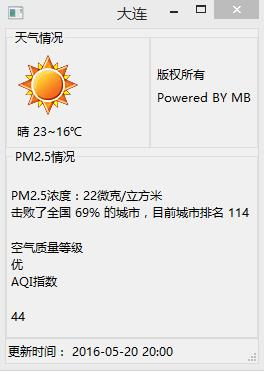

初始工作
在进行天气预报程序制作之前，首先我们必须先下载python，这里推荐使用python2.7.9，因为python 3.0以上的版本不支持wxpython，因此没法使用此模块进行可视化处理。
除此之外，我们还需要下载pyinstaller对程序进行打包，然后制作一款可视化良好的软件。
基础知识介绍
在进行天气预报程序制作之前必须具备以下基础知识：
Dos窗口命令的使用- 正则表达式的使用
Wxpython基本知识Pyinstaller打包知识
详细代码
（1）首先我们利用python中的BeautifulSoup与re模块将数据从http://www.pm25.com网站上抓取下来，注意
这里要用utf-8进行编码，不然会出现乱码情形，到此我们可以获得我们所需的数据.
（2）然后，我们就要对数据进行可视化处理，在这里我们选用wxpython进行可视化处理。
(3)这样，我们就可以以GUI的形式看到天气数据了，到这，基本工作已经完成;剩下的就是要对程序进行封装，这里我们采用pyinstaller进行打包，打包命令如下：
- 首先打开dos窗口，按键盘上的win+r，然后输入cmd,点击确定
- 命令提示符cd到需要打包的文件的目录
- 直接在命令提示符中输入pyinstaller -F MyFrame.py 注意F要大些，然后Enter；
- 打包成功后会出现两个文件夹，其中一个就是所需要的exe文件
- 注：若是gui文件可以在输入pyinstaller -F -w文件名.py 其中w是小写，意思就是没有命令行窗口， 默认的是-c有命令行窗口，当然一般的文件也可以-w，这样命令行窗口就没有了。
最后为您奉上天气预报软件。
代码以及软件下载：天气预报，仅供交流，请不要用于任何商业目的。
MENBIN 地点：中国--大连--东财